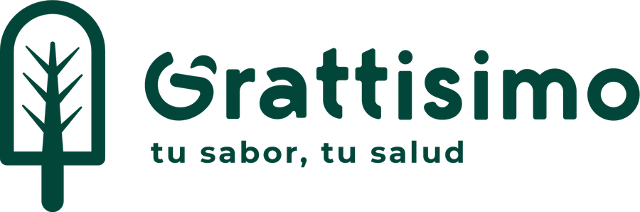
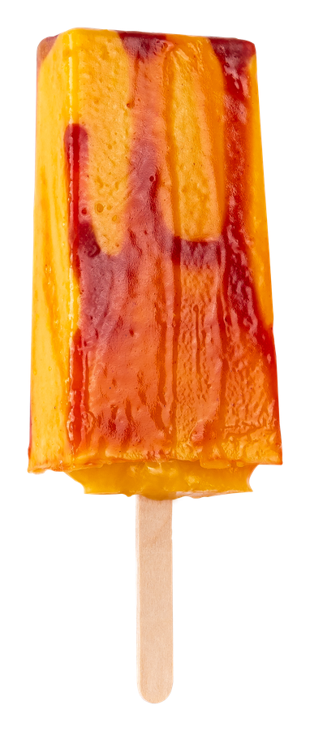
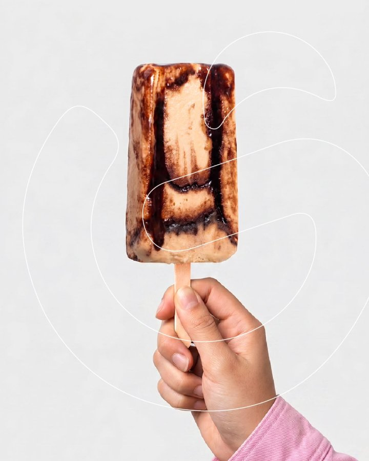

Helados de fruta 100% natural
Bajos en calorías y azúcares — 100% delicioso, 0% culpa.
En cada bocado — nada de saborizantes que fingen ser fruta.
Bajo en calorías y azúcares. El antojo, sin el remordimiento.
Opciones aptas para diabéticos, con y sin leche, de agua y cremosos.
Todo el sabor, en grande y sin culpa. Así reinventamos el postre.


Hecho natural
Cremoso e intenso, con ese toque que engancha desde la primera mordida.
Helados de fruta Light: frescos y llenos de sabor. 0 culpas, puro Grattisimo.
¿Por qué Grattisimo?
Sabemos que quieres cuidar tu salud sin perderte las mejores cosas de la vida. Por eso reinventamos el postre: helados a base de fruta natural, bajos en calorías y azúcares. 100% delicioso, 0% culpa.
Nuestro menú
Desde opciones sin azúcar aptas para diabéticos hasta cremosos tipo gelato. ¡Hay un sabor para ti!
Hechos con fruta natural y trozos de fruta en su interior. ¿Con o sin azúcar? ¿Con o sin leche? Tú eliges.
Base cremosa tipo gelato: algunos con trozos de tus ingredientes favoritos, otros marmoleados con fruta natural. Cada sabor es una experiencia.
…y versión Light de tus frutas favoritas — pregunta por ella en tu tienda 🍦
Nuestros aliados comerciales
Juntos ponemos el postre perfecto al alcance de tus manos en toda la ciudad.


Encuéntranos
Búscanos dentro de Paiz, Walmart y restaurantes Los Cebollines en toda Ciudad de Guatemala. Toca tu tienda más cercana para pedir en PedidosYa.
Tu Grattisimo más cercano
Tu Grattisimo más cercano